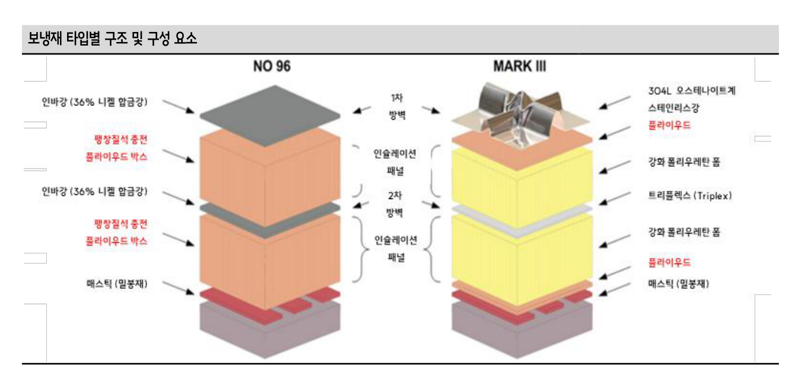
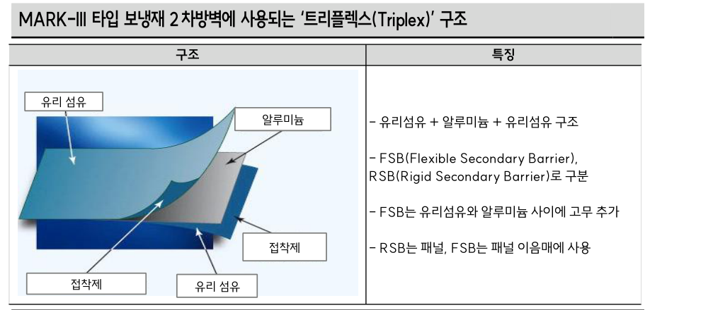

조선 기자재 — 엔진은 «바다와 데이터센터의 이중 쇼티지», 보냉재는 «LNG선 천장 넘기», 병목은 협력사 캐파
한눈에 보기
결론
- 엔진: 한·중 상선 발주 역대급 + 중국 자국 엔진 부족 + 데이터센터 발전 수요 → 국내 엔진 3사 잔고 20.4조원·가동률 100%+ (DS, 2026-09-29)
- 보냉재: 국내 2사 CAPA(연 약 68척)는 한국 LNG선 건조량에 맞춰져 있음 → VLEC·FLNG·DF선 수요가 붙는 2028년부터 수요(73척)가 CAPA를 넘어섬 (DS, 2026-03-31)
- 쟁점: 엔진 «쇼티지 장기화»(DS) vs «업사이클은 애매, 육상엔진 단기 속도조절»(미래에셋). LNG선 발주도 연 90~110척(DS) vs 하반기 13척 둔화(미래에셋)
| 지표 | 값 | 의미 | 출처 |
|---|---|---|---|
| 국내 엔진 3사 수주잔고 | 20.4조원 | 역대 최대(2Q26) | (DS, 09-29) |
| 2행정 엔진 수주 점유(2025) | 한국 56% | 중국 36%·기타 8% | (DS, 09-29) |
| 중속엔진 공급 CAPA | 6.1→15GW/년 | 증설 후에도 수요 절반 | (미래에셋, 11-19) |
| 보냉재 척당 판가 | 약 250억원 | 멤브레인 포함 | (하나, 25-03-12) |
| 보냉재 국내 2사 CAPA | 약 68척/년 | 28년 수요 73척 | (DS, 03-31) |
flowchart LR SHIP["신조선"] --> ENG["추진·발전<br/>2행정 주기·4행정 보기"] SHIP --> CT["LNG 화물창<br/>GTT 멤브레인"] SHIP --> PIPE["배관·피팅<br/>SUS 극저온"] SHIP --> BLK["블록·의장<br/>협력사 외주"] ENG --> PART["엔진 부품<br/>크랭크샤프트·터보차저"] CT --> INS["보냉재<br/>R-PUF·단열패널"] INS --> SB["2차 방벽<br/>Triplex"] ENG --> AM["애프터마켓<br/>MRO·순정부품"] DC["육상 데이터센터<br/>발전 수요"] --> ENG LNGP["LNG 플랜트·FLNG"] --> PIPE LNGP --> INS
구성: 신영(2026-04-23) 엔진·부품 공급자 구분, 신한(2026-04-13) 밸류체인, DS(2026-03-31·11-10) 보냉재·피팅 전방을 엮음
원천 한계
- 캐시 264건 중 2026년 243건·2025년 20건·2024년 1건. 보냉재는 2025년 기업 리포트가 있어 상대적으로 길게 보임, 엔진·피팅은 2026년 위주
- 엔진 단가·보냉재 판가의 분기 시계열은 원문 그래프뿐 ⚠ → 연간 몇 개 점만 사용
- 관련 노트: 00_조선_index · 01_조선_용어집 · 02_조선_발주와선가 · 03_조선_선종과기술 · 04_조선_해양과특수선 · 06_조선_시장규모모델 · 07_조선_하우스시각_변경이력 · 08_조선_트래킹캘린더
- 화물창 방식(멤브레인 vs 독립형) 자체는 03_조선_선종과기술, 여기선 «공급망·가격» 위주
① 기초: 기자재 지도
요약
- 선박 기자재의 핵심은 «라이선스 + 국내 생산» 구조: 엔진은 유럽 라이선서(Everllence·WinGD), 화물창은 프랑스 GTT
- 국내 업체는 라이선스로 만들거나(엔진) 인증받아 납품(보냉재)함 → 진입장벽 = 인증·레퍼런스
| 품목 | 역할 | 원천기술(라이선서) | 국내 생산 사례 |
|---|---|---|---|
| 2행정 저속엔진 | 주기(추진) | Everllence·WinGD | HD현대중공업·한화엔진 |
| 4행정 중속엔진 | 보기(발전) | 힘센·Everllence 등 | HD현대중공업·STX엔진 |
| 크랭크샤프트 | 엔진 핵심 단조품 | — | HD현대크랭크샤프트 |
| 터보차저 | 과급기 | Accelleron 위탁 | HD현대마린엔진 |
| 보냉재 | 화물창 단열 | GTT | 한국카본·동성화인텍 |
| 2차 방벽(SB) | 누출 방지막 | GTT 인증 | 한국카본(독점) |
| 배관 피팅 | 관 이음 | — | 태광·성광벤드 |
| 블록·의장 | 외주 구조물 | — | 세진중공업·현대힘스 |
자료: 신영(2026-04-23) 엔진·부품 공급자, 신한(2026-04-13) 밸류체인, SK(2025-09-03) SB 독점, 미래에셋(2026-09-29) Accelleron 위탁. Everllence = 구 MAN Energy Solutions
- 엔진은 선주가 지정하는 주요 기자재 → 배는 중국에서 싸게 지어도 엔진은 한국산을 지정하는 경우가 많음 (신영, 2026-04-23)
- 엔진 부품 공급망: 실린더라이너(케이프), 주기·보기 부품(인화정공), 실린더커버(삼영엠텍), 단조(태웅) (신영, 2026-04-23)
② 전방 수요
요약
- 상선: 2026년 한·중 신조 계약 2.6억DWT 전망(2007년 1.94억DWT 넘는 역대 최대) → 엔진 물량 직결
- 친환경: 신조 친환경선의 연료 선택은 사실상 LNG DF(100%) → 엔진 단가·보냉재 수요 동시 확대
- 육상: AI 데이터센터 온사이트 발전 → 선박용 4행정 중속엔진의 새 전방
상선 발주와 DF 채택
| 지표 | 값 | 출처 |
|---|---|---|
| 한·중 신조 계약(2026E) | 2.6억DWT | (DS, 09-29) |
| 신조 친환경선 중 LNG DF | 100% | (DS, 09-29) |
| DF 선가 프리미엄(컨선) | 10~20% | (DS, 09-29) |
| DF 선가 프리미엄(탱커) | 20~25% | (DS, 09-29) |
| VLCC·중소형 컨선 DF 비중 | 1% 미만 | (DS, 09-29) |
| 잔고 내 대체연료선 | 2,063/6,819척 | (신영, 04-23) |
| 글로벌 대체연료선 GT 비중 | 39%(2024) → 28%(2026.1~10) | (현대차, 11-19) 🆕 신규 11/23 |
| 대체연료선 발주량(1~10월) | 5,300만GT(2025 연간 4,420만) | (현대차, 11-19) 🆕 신규 11/23 |
| 한국 수주 DF 탑재(LNG선 제외) | 63%(2023) → 45%(2026) | (현대차, 11-19) 🆕 신규 11/23 |
| 한국 수주 재래식 비중 | 8%(2023) → 43%(2026) | (현대차, 11-19) 🆕 신규 11/23 |
- 다음 DF 채택 주자: 노후선 비중 20% 넘는 중소형 컨선(33.2%)·아프라막스(22.2%)·수에즈막스(21.3%)·VLCC(20.7%) (DS, 2026-09-29)
- 2026년 한국 수주는 DF 탑재 비중이 멈추고 Ready(개조 대비) 사양이 재래식으로 바뀜 → 2행정 DF 엔진 단가 상승 경로가 둔해질 수 있음(내 해석). 사양 구분은 03_조선_선종과기술 «연료 사양 3분류» (현대차, 2026-11-19) 🆕 신규 11/23
- IMO 넷제로 프레임워크(NZF): 2025년 10월 1년 유예 → 2026년 12월 재표결, 의무 적용은 2028년부터 (DS, 2026-09-29)
- NZF 50% 완화 시행 가정에도 컨벤셔널 선박은 선가의 20~30%만큼 탄소비용 부담 (DS, 2026-09-29)
보냉재가 들어가는 선종
| 선종 | 보냉재 투입량 | 비고 |
|---|---|---|
| LNG선(174k) | 100% | 기준 |
| FLNG | 140% | 최소 1.4배 |
| VLEC(에탄선) | 60% | 미국 에탄 수출 |
| LNG 벙커링선 | 10% | DF선 확산 연동 |
| LNG DF 추진선 | 7% | 연료탱크 |
자료: DS(2026-03-31). LNG선 1척 = 100으로 환산한 추정치. DF선은 인도 예정선의 50%만 보냉재 사용 가정
- 2028년 보냉재 필요량 = LNG선 환산 약 73척 → 국내 2사 합산 CAPA 약 68척 초과 (DS, 2026-03-31)
- 기타 선종 매출 비중 2%(2025) → 16% 이상(2029) 전망. 설계 변형 물량이라 LNG선보다 마진 소폭 높음 (DS, 2026-03-31)
데이터센터 전력 → 중속엔진
자료: 미래에셋(2026-11-19), 사업자 증설계획 기반 추정. 위 선 = 누적 용량, 아래 선 = 연간 신규 공급(2027~32 연평균 약 33GW)
- 가스터빈 최단 인도가 2029년 하반기~2030년 → 납기가 2년 이상 빠른 중속엔진이 대안 (미래에셋, 2026-09-29)
- 미국 DC 온사이트 가스발전 중 엔진 채택 26건·35GW (미래에셋, 2026-09-29)
- 단, 미국 DC 인허가 병목으로 단기 수주 속도조절(규제 강화 지역이 계획 용량의 40~45%) (미래에셋, 2026-11-19)
- 중간선거 뒤 미국 AI DC 투자가 늦어지면 발전용 엔진 공급 불확실성 확대, 반대로 DC 자가발전 의무가 강화되면 엔진 수요에 긍정 (키움, 2026-11-19) 🆕 신규 11/23
③ 기술 심화
요약
- 엔진: 2행정(추진)은 «DF 고압 vs 저압», 4행정(발전)은 «선박에서 육상 발전소로 이동»이 핵심
- 보냉재: GTT 멤브레인 두 표준(Mark III·NO96)이 시장을 양분 → 어느 표준이냐에 따라 공급자가 갈림
- 피팅: LNG는 고가 SUS·듀플렉스 → 같은 물량도 금액·마진이 큼
2행정 vs 4행정
| 구분 | 2행정 저속 | 4행정 중속 |
|---|---|---|
| 용도 | 추진(주기) | 선내 발전(보기) |
| 출력 단위 | 마력(만 마력) | MW(대당 3~20MW) |
| 회전 | 저속, 프로펠러 직결 | 중속, 발전기 연결 |
| 새 전방 | DF 선박 확산 | 육상 DC·파워십·FDC |
자료: 신영(2026-04-23), 메리츠(2026-07-20) Everllence 대당 3.1~20.7MW, 미래에셋(2026-09-29)
DF 엔진: 고압 vs 저압, 한국 vs 중국
| 항목 | 한국 제조 | 중국 제조 |
|---|---|---|
| 메탄 슬립(고압 ME-GI) | 0.15~0.25% | 0.35~0.50% |
| 메탄 슬립(저압 X-DF) | 1.0~1.5% | 2.0~2.8% |
| 연료소비(g/kWh) | 132~134 | 136~139 |
| 피스톤링 수명(시간) | 18,000~24,000 | 12,000~15,000 |
| 실린더라이너 수명(시간) | 50,000~60,000 | 30,000~40,000 |
자료: MAN·WinGD 인용 DS(2026-09-29)
- 무엇: 디젤유와 LNG를 모두 쓰는 엔진. 고압 분사(ME-GI)는 메탄 슬립이 적고, 저압(X-DF·ME-GA)은 설비가 단순
- 왜 중요: 2026년부터 EU ETS에 메탄 포함 → 메탄 슬립이 곧 비용 → 유럽 선주의 한국 엔진 지정 선호 (DS, 2026-09-29)
- 모르는 것: 중국 엔진사 증설 후 성능 격차가 얼마나 빨리 좁혀질지 ⚠. SK는 중국 저속엔진 점유율 상승을 위험으로 지적 (SK, 2026-08-03)
4행정 중속 가스엔진의 육상 발전
| 발전원 | 설비비($/kW) | 특징 |
|---|---|---|
| 가스엔진 | 1,797 | 모듈형, 2분 내 전부하 |
| 연료전지 | 3,899 | 자본집약 최상 |
| 가스터빈(All-in) | 2,400 | 2022년 785에서 급등 |
자료: 미래에셋(2026-09-29). 가스터빈은 NextEra 2025년 수치
- 원리: 10~20MW급 엔진 여러 대를 병렬 구성 → 필요한 만큼 단계 증설. 예비력도 18MW급 3기 추가로 해결(CCGT는 150MW 블록 통째) (미래에셋, 2026-09-29)
- 기존 대비: 50~400MW급이 경제성 «스윗 스폿». 6GW 이상 대형 사이트에선 터빈이 유리해짐 (미래에셋, 2026-09-29)
- 누가: 대출력 라인업 보유 라이선서는 바르질라·Everllence·HD현대중공업 3곳으로 압축. 일본 업체는 대출력 부재 (미래에셋, 2026-09-29)
- 애프터마켓: DC용은 24시간 고부하 → 정비 주기 5년→3년, MRO 빈도 1.5배 이상 (미래에셋, 2026-09-29)
화물창 보냉재: Mark III vs NO96

자료: SK(2025-09-03). NO96은 인바강 2겹 + 펄라이트 충전 합판 박스, Mark III는 스테인리스 1차 방벽 + 강화 폴리우레탄폼(R-PUF) + Triplex 2차 방벽
| 항목 | Mark III | NO96 |
|---|---|---|
| 1차 방벽 | 304L 스테인리스 | 인바강(36% 니켈) |
| 단열재 | 강화 폴리우레탄폼 | 펄라이트 합판 박스 |
| 2차 방벽 | Triplex(알루미늄+유리섬유) | 인바강 |
| 최신 BOR | Flex 0.07% | Super+ 0.085%·L03+ 0.110% |
| 국내 채택 | HD현대·삼성중공업 | 한화오션 |
자료: SK(2025-09-03), DS(2026-03-31). BOR = 하루 기화율(낮을수록 화물 손실 적음)
- 무엇: −163℃ LNG를 담는 화물창 벽의 단열층. 화물창 설계 라이선스는 GTT가 독점
- 왜 중요: 선주들이 BOR 0.1% 이하를 요구 → 고사양 제품일수록 단가 상승 (SK, 2025-09-03)
- 기술료: GTT 로열티는 LNG선 1척당 약 50억~100억원 추정 → 한국형 화물창(KC LNG Tech) 국산화 시도 (신한, 2026-04-13)
- 모르는 것: 한국형 화물창(KC-1)은 콜드스팟 결함 소송 이력 → 상용 확산 시점 ⚠ (SK, 2026-11-15)

자료: SK(2025-09-03). FSB(고무 추가, 패널 이음매용)·RSB(패널용)로 구분. Triplex는 보냉재 매출의 약 25%, 고마진
- 2차 방벽(SB)은 GTT가 허가한 유일 소재 → 중국 조선소가 R-PUF는 자국 조달해도 SB는 한국에서 사야 함 (다올, 2026-06-04)
- NO96 Super+에 R-PUF가 섞이기 시작 → Mark III 전문 업체가 NO96 고객(한화오션)까지 확장(2026-05, 720억원·약 4척) (DB, 2026-05-22; 다올, 2026-06-04)
배관 피팅: 재질이 금액을 정함
| 재질 | kg당 가격 | 주 용도 |
|---|---|---|
| SUS 무계목 강관 | 1.1~1.35만원 | LNG선·LNG 터미널 |
| 탄소강 | 1,400~1,600원 | 발전·DC(70~80%) |
자료: DS(2026-11-10). SUS가 탄소강의 약 8배. 마진 순서: 육상 LNG 터미널 < LNG선 < FLNG(듀플렉스 비중 높음)
- LNG선은 화물창·연료·증발가스 배관의 약 90%가 SUS → 척당 피팅 약 8억원 (DS, 2026-11-10)
- 피팅은 LNG 터미널 EPC의 1~2%, FID 후 5~8개월 내 발주 시작 → FID가 선행지표 (DS, 2026-11-10)
④ 캐파·증설
요약
- 엔진: 3사 모두 가동률 100% 초과, 2028년 슬롯 완판(한화엔진). HD현대중공업은 중속엔진 7.2GW 체제로 증설
- 중속엔진: 글로벌 CAPA 6.1→15GW로 늘어도 DC 수요(연 30GW+)의 절반 수준
- 보냉재: 국내 2사 각 33~34척, 중국 Yoke 15~17척. SB는 80→100척 증설
국내 엔진 3사 수주잔고 (2Q26)
| 업체 | 잔고 | 비고 |
|---|---|---|
| HD현대중공업(엔진) | 12조원 | 추진 1,200만·발전 400만 마력 |
| 한화엔진 | 5.9조원 | 28년 슬롯 완판 |
| HD현대마린엔진 | 1.5조원 | 잔고의 약 50% 중국향 |
| 합계 | 20.4조원 | 역대 최대, 가동률 100%+ |
자료: DS(2026-09-29), 생산능력은 신영(2026-04-23)
- 중국 자국 엔진이 도크 증설 속도를 못 따라감 + 엔진 슬롯이 국영 조선소에 우선 배정 → 민영 조선소가 한국 엔진 발주 (DS, 2026-09-29)
- 2026년 국내 엔진 2사 중국향 수주 1.4조원 이상(연간 역대 최대), 2025년 민영 조선소향 9,000억원(+45%) (DS, 2026-09-08·09-29)
- 중국 조선소 2027~2029년 누적 증설 8~10백만CGT 초과 전망 → 엔진 수요 지속 (DS, 2026-09-29)
중속엔진 공급 CAPA (GW/년)
| 업체 | 현재 | 증설 후 | 시기 |
|---|---|---|---|
| 바르질라 | 3~4 | 5.5 | 1Q29 |
| HD현대 힘센 | 0.7 | 4.0 | 2028~ |
| Everllence | 1.5 | 1.5 | — |
| Caterpillar | 0 | 1.5 | 4Q26~ |
| Bergen | 0.4 | 1.5 | 2028 |
| INNIO(미국 JV) | — | 1.0+ | 2028 |
자료: 미래에셋(2026-11-19). 현재 합계 6.1GW → 증설 후 15.0GW. 바르질라·Everllence는 매출 역산 추정치. HD현대 수치는 육상발전 전용(본공장 포함 총 7.2GW)
- 바르질라는 2028년 생산 슬롯 완판, 29~30년 물량 부킹 중. INNIO는 26~27년 사실상 매진 (미래에셋, 2026-09-29·11-19)
- HD현대중공업 증설 규모 표기가 하우스마다 다름: «4.2GW 증설, 8,336억원, 28년 5월 준공»(DS) vs «영암 1GW + 온산 3GW»(미래에셋). 2030년 총 7.2GW는 공통 (DS, 2026-09-29; 미래에셋, 2026-09-29)
- 한화엔진 4행정: 900MW(대당 5MW×180대) 신공장 3Q26 준공, 2배 증설이 쉽게 설계 (미래에셋, 2026-09-29)
- HD현대 육상발전용 4행정 CAPA 2030년 4.0GW, 신공장 가동률 2028년 약 30% → 2030년 100% 계획. 발전용 엔진 인콰이어리·하이퍼스케일러 직접 문의 증가 (현대차, 2026-11-19) 🆕 신규 11/23
- 신공장 풀가동 매출 연 약 3조원 (현대차, 2026-11-19) → DS의 2030년 DC향 엔진 매출 3조원 전망과 같은 수준. 키움은 2028년 이후 연 3GW 이상 납품 본격화로 봄 (키움, 2026-11-19) 🆕 신규 11/23
보냉재·SB CAPA
| 공급자 | CAPA(척/년) | 주력 타입 |
|---|---|---|
| 한국카본 | 33~34 | Mark III(+NO96 Super+) |
| 동성화인텍 | 33~34 | Mark III 30·NO96 8 |
| Yoke(중국) | 15~17 | NO96 우위 |
| SB(Triplex) | 80→100 | Mark III 전량 |
자료: DS(2026-03-31), 하나(2025-03-12) 동성화인텍 타입별 구분, 다올(2026-06-04) SB 증설(밀양 1,000억원, 2027년 말 가동)
- 국내 2사는 CNC 설비 보강만으로 9개월 안에 합산 80척까지 확대 가능 (DS, 2026-03-31)
- 중국 신규 LNG선 조선소(장난·다롄·양쯔장)는 Mark III 채택 → SB 수요는 중국 확장과 함께 증가 (DS, 2026-03-31)
피팅·블록: 협력사 병목
- 피팅 2사 CAPA 약 9,000억원 vs 2028년 수주 기대 9,511억원 → 인력 채용·증설·선별 수주 가능성 (DS, 2026-11-10)
- 블록·배관·의장 협력사의 인력난·CAPA 부족이 조선소 납기 리스크로 부상 (신한, 2026-04-13)
- 조업도 하락 시 고정비가 원가로 배부되지 못하고 당기 비용 처리 → 3Q26 기자재 어닝쇼크의 원인으로 추정 (메리츠, 2026-11-07)
로드맵 (2026~2030)
| 구분 | 항목 | 2026 | 2027 | 2028 | 2029 | 2030 | |||||||||||||||
|---|---|---|---|---|---|---|---|---|---|---|---|---|---|---|---|---|---|---|---|---|---|
| 1Q | 2Q | 3Q | 지금 4Q | 1Q | 2Q | 3Q | 4Q | 1Q | 2Q | 3Q | 4Q | 1Q | 2Q | 3Q | 4Q | 1Q | 2Q | 3Q | 4Q | ||
| 엔진 | 한화엔진 4행정 | ◆ 900MW 공장 준공 | |||||||||||||||||||
| 한화엔진 2행정 | ◆ 증설 준공 | 530만 마력 온기 반영 | |||||||||||||||||||
| HD현대 중속 | ◆ 증설 공시 | ◆ 신공장 준공 | 총 7.2GW 체제 | ||||||||||||||||||
| HD현대 DC향 | ◆ 첫 출하 | ||||||||||||||||||||
| 바르질라 | ◆ 캐파 +35% | ◆ 추가 +30% | |||||||||||||||||||
| 보냉재 | SB(Triplex) | ◆ 신공장 80→100척 | |||||||||||||||||||
| 수급 | 수요 73척 > CAPA 68척 | ||||||||||||||||||||
| 피팅 | 2사 수주 | ◆ 분기 1,800억원 | 연 8,246억원 전망 | 9,511억원 > CAPA | |||||||||||||||||
| 규제 | IMO NZF | ◆ 12월 재표결 | 규제 의무 시작 | ||||||||||||||||||
진행·확정 ◆ 가동 개시·핵심 마일스톤 계획 구간 | 굵은 세로선 = 연도 경계
자료: DS(2026-03-31·09-29·11-10), 미래에셋(2026-09-29·11-19), 다올(2026-06-04)
⑤ 가격·마진
요약
- 엔진 ASP 상승 요인 3개: 풀가동(+10~20%)·DF 믹스(+20~30%)·선가 전가(+10~20%) (DS, 2026-09-29)
- 보냉재 판가는 선가를 «늦게, 덜» 따라감: LNG 선가 10%↑ → 판가 3~4%↑ (DS, 2026-03-31)
- 원가 변수: MDI(보냉재), 목재(보냉재 원가 10~15%), SUS 가격(피팅)
보냉재 판가 vs 신조선가 (2020=100)
자료: 하나(2025-01-22) 연평균 신조선가지수 +22·+5·+10·+6%, 보냉재 판가 2021~22년 동결·2023~24년 각 +5%를 2020=100으로 누적(내 계산). 위 = 선가, 아래 = 보냉재 판가
- 판가 인상분(2023년 이후 수주)이 2025~2027년 매출에 반영되는 시차 구조 (DS, 2026-03-31)
- 2024~2025년 선가 정체기에도 판가는 방어됨 (DS, 2026-03-31)
단가 모음
| 품목 | 단가 | 출처 |
|---|---|---|
| 보냉재(LNG선 1척) | 약 250억원 | (하나, 25-03-12) |
| GTT 로열티(1척) | 50억~100억원 | (신한, 04-13) |
| 피팅(LNG선 1척) | 약 8억원 | (DS, 11-10) |
| 2행정 엔진(한화엔진, 대당) | 103억→97억원 | (미래에셋, 09-29) |
| DC 중속엔진(HD현대) | 1GW당 약 1조원 | (미래에셋, 09-29) |
| DC 엔진 MRO(연) | GW당 550~780억원 | (미래에셋, 09-29) |
2행정 단가 하락(1Q→2Q26)은 선종 믹스 영향. DC 수주 2건: Aperion 660MW·4.2억(6,271억원), Corban 1GW·6.7억(9,560억원)
원가 변수
| 변수 | 움직임 | 영향 | 출처 |
|---|---|---|---|
| MDI(R-PUF 원료) | 4Q25 −17% YoY | 보냉재 마진 ↑ | (미래에셋, 26-03-27) |
| MDI | 1Q26말 +22.5% YoY | 하반기 원가 부담 | (미래에셋, 26-04-29) |
| MDI | 중동전쟁 후 +20~30% | 고환율이 일부 상쇄 | (DS, 26-05-19) |
| 목재(합판) | 안정화 | 원가의 10~15% | (SK, 25-09-03) |
| 미국 내 기자재 조달가 | 한국의 1.5~2배 | 미국 건조원가 3.5배 | (미래에셋, 26-09-29) |
- 보냉재는 달러 매출, 2022~2024년 수주 당시 환율 1,300원대 → 고환율 유지 시 실적 우호 (DS, 2026-03-31)
- 미국은 대형 해양엔진·감속기·추진축·프로펠러 등 핵심 부품의 자국 생산 확대를 정책 목표로 명시 → 장기적으로 국내 기자재 수출 경쟁 요인 (SK, 2026-06-29)
- 반대로 미국 내 대형 선박 엔진 생산 기반이 없어 신조 엔진은 결국 국내 엔진사 공급이라는 시각도 있음 (DS, 2026-09-29)
⑥ 하우스별 시각과 엇갈림
요약
- 공통 시각(2곳 이상): 국내 엔진 가동률 포화·중국향 확대(DS·SK·미래에셋), SB 독점(SK·DB·다올), 보냉재 판가는 선가 후행(하나·DS)
- 엇갈림: 엔진 업사이클 지속성, LNG선 발주 속도, 보냉재 점유 구조
| 쟁점 | 한쪽 | 다른 쪽 |
|---|---|---|
| 엔진 사이클 | DS: 쇼티지 심화, Q·P 동시↑ | 미래에셋: 업사이클은 애매 |
| 육상 중속엔진 | 신한: 2030년 85조원 시장 | 미래에셋: 단기 속도조절 |
| LNG선 발주 | DS: 2032년까지 연 90~110척 | 미래에셋: 하반기 13척 둔화 |
| 중국 엔진 위협 | DS: 성능 격차 유지 | SK: 중국 점유율 상승 우려 |
| 한화엔진 2행정 증설 | DS: 400→530만 마력 | 미래에셋: 330→530만 마력 |
| 보냉재 점유 | IBK: 2사 잔고 40~60% 균형 | 신한: 동성 PUF 국내 80%+ |
자료: DS(2026-09-29), 미래에셋(2026-09-29·11-19), 신한(2026-04-13·05-22), SK(2026-08-03), IBK(2025-10-27)
- LNG선 둔화: 2026년 LNGC 발주 68척(~9월) 중 하반기 13척, 7~11월 국내 수주 8척 → 보냉재·피팅 기저 물량에 직접 영향. 미래에셋은 2027년 상반기 반등 예상 (미래에셋, 2026-11-19)
- 보냉재 점유: 신한의 «PUF 국내 80%+»는 다른 하우스(R-PUF 양분, 잔고 점유 균형)와 정의가 다를 가능성 ⚠ (신한, 2026-04-13; DB, 2026-05-22)
- 엔진 밸류: DS는 PER 25배 합당, SK는 엔진 2사 12M Fwd PER이 10~12배로 조선사보다 낮아졌다고 지적 (DS, 2026-09-29; SK, 2026-08-03)
그래서 뭘 믿어야 하나: 2028년까지는 «잔고·가동률»이 이미 찍혀 있어 엔진 물량은 확실. 갈리는 건 2029년 이후 단가와 육상 수주 속도
⑦ 트래킹
요약
- 엔진: 분기 수주·잔고, 중국향 비중, DC향 추가 수주
- 보냉재: LNG선 발주 반등 시점(2027 상반기?), MDI 가격, NO96 Super+ 확산
- 피팅: 미국 LNG FID와 발전 플랜트 착공
| 시점 | 이벤트 | 확인할 것 |
|---|---|---|
| 2026-12 | IMO NZF 재표결 | DF 2차 발주 사이클 |
| 2026-4Q | 한화엔진 2행정 증설 준공 | 2027년 Q 반영 |
| 2027-1H | LNG선 발주 반등 여부 | 보냉재 수주 공시 |
| 2027 | 북미 LNG FID 9건(55MTPA) | 피팅 수주 |
| 2027-4Q | SB 신공장 가동 | 중국향 SB 물량 |
| 2028-2Q | HD현대 중속엔진 신공장 | DC 수주 잔고 |
| 2028~ | 보냉재 수요 > CAPA | 증설 공시 |
자료: DS(2026-03-31·09-29·11-10), 다올(2026-06-04), 미래에셋(2026-11-19)
한 줄: 기자재는 조선소보다 사이클이 «먼저, 더 세게» 움직임 — 2028년까지는 잔고가 받쳐 주고, 그 뒤는 LNG선 발주와 육상 발전 수요가 결정
출처 (펼쳐 보기)
- DS투자증권: 2026-03-31(LNG 시대의 교집합, 보냉재), 2026-05-19(보냉재 기업 코멘트), 2026-09-08(한·중 상선 수주와 엔진), 2026-09-29(엔진: 바다 위의 반도체), 2026-11-10(피팅)
- 미래에셋증권: 2026-03-27·04-29(보냉재 기업), 2026-09-29(조선/AI엔진 Next Cycle), 2026-11-19(2027 전망 조선/엔진)
- 신영증권: 2026-04-23(엔진기업 점검)
- 신한투자증권: 2026-04-13(생산적금융 II), 2026-05-22(하반기 전망)
- SK증권: 2025-09-03(보냉재 듀오), 2026-06-29(미국 조선업 재건), 2026-08-03(낙폭과대), 2026-11-15(수주산업 위클리)
- 하나증권: 2025-01-22·03-12(보냉재 기업)
- IBK투자증권: 2025-10-27(냉각의 미학)
- DB금융투자: 2026-05-22 / 다올투자증권: 2026-06-04
- 메리츠증권: 2026-07-20(표류하는 조선주), 2026-11-07(Weekly 기자재)
- 키움증권 「반등의 가능성, 증명의 시간」 2026-11-19 · 현대차증권 「기다림 속에서 봐야할 것들 (1) 밸류와 환율」 2026-11-19 🆕 신규 11/23
다음 갱신 때 확인할 것
- 엔진 ASP 분기 시계열(국내 엔진 2사) → 선그래프로 보강 ⚠ 현재 원문 그래프뿐
- HD현대중공업 중속엔진 증설 규모 표기(4.2GW vs 영암1+온산3GW) 정리 — 현대차(11-19)는 육상발전용 2030년 4.0GW로 적음 🔄 갱신 11/23
- 한화엔진 2행정 증설 전 CAPA(330만 vs 400만 마력) 확인
- 중국 저속엔진(CSSC 계열) 점유율 수치 — 원천에 정량 없음 ⚠
- LNG선 발주 반등과 보냉재 신규 수주, MDI 가격 방향
- 미국 핵심 부품 국산화 정책이 국내 기자재 수출에 주는 영향
갱신 기록
- 2026-11-23: DF 채택 지표 4행(글로벌 대체연료 비중·한국 탑재/재래식), HD현대 신공장 가동률 경로·풀가동 매출, DC 투자 둔화·자가발전 의무 영향 추가 (키움, 2026-11-19; 현대차, 2026-11-19)